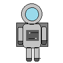

Savieno vienādos objektus tos ķerot Pēc katra jaunā objekta atklāšanas izlasi teoriju par to Spēle beidzas, kad tiek līdz pēdējam objektam Spēlētājs zaudē, ja nenoķer objektu vai noķer nepareizo objektu (kuru kosmanauts netur)

Uzvaras skaņa:
Punkti: 0